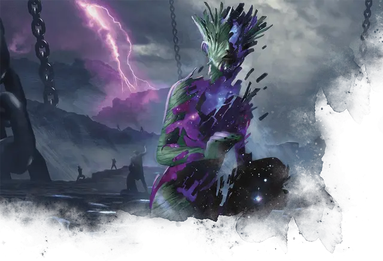

Лампада
Lampad
Средняя Фея, нейтрально-злая

Класс Доспеха 15 (природный доспех)
Хиты 52 (8к8 + 16)
Скорость 30 футов
| мод | спас | ||
|---|---|---|---|
| СИЛ | 12 | +1 | +1 |
| ЛОВ | 13 | +1 | +1 |
| ТЕЛ | 14 | +2 | +2 |
| мод | спас | ||
|---|---|---|---|
| ИНТ | 11 | +0 | +0 |
| МДР | 12 | +1 | +1 |
| ХАР | 18 | +4 | +4 |
Навыки Запугивание +6, Убеждение +6
Сопротивление урону некротическая энергия
Иммунитет к урону яд
Иммунитет к состояниям испуг, отравление, очарование
Чувства пассивное Восприятие 11
Языки Общий, Сильван
Опасность 3 (700 опыта)
Бонус мастерства +2
Особенности
Трупный переход. В свой ход, лампада может потратить 10 футов своего передвижения, чтобы магически войти в труп одного существа в пределах видимости и выйти из трупа другого существа в 60 футах от первого трупа, появляясь в свободном пространстве в 5 футах от второго трупа. Оба трупа должны быть Среднего размера или больше.
Врожденное колдовство. Базовой характеристикой лампады является Харизма (+6 к попаданию атакой заклинанием). Он может накладывать следующие заклинания, не нуждаясь в материальных компонентах:
• Неограниченно: леденящее прикосновение [chill touch] (см. «Действия» ниже), нетленные останки [gentle repose];
Сопротивление магии. Лампада совершает с преимуществом спасброски от заклинаний и прочих магических эффектов.
Действия
Мультиатака. Лампада атакует дважды своим Некротическим прикосновением или Леденящим прикосновением.
Некротическое прикосновение. Рукопашная атака заклинанием: +6 к попаданию, досягаемость 5 футов., одна цель. Попадание: 9 (1к10 + 4) урона некротической энергией.
Леденящее прикосновение (Заговор). Дальнобойная атака заклинанием: +6 к попаданию, досягаемость 120 футов., одно существо. Попадание: 9 (2к8) урона некротической энергией, и цель не может восстанавливать свои хиты до начала следующего хода лампады. Если цель-нежить, то она так же получает помеху на броски атаки против лампады до конца следующего хода лампады.
Описание
Лампады охраняют темные пути мира, глубины, по которым обычно ступают души, предназначенные для Подземного царства. Эти редко встречающиеся нимфы помогают Атрею направлять мертвых, перемещаясь среди духов, которые собираются вдоль реки Тартикс, и возвращая заблудшие души, которые пытаются ускользнуть обратно в мир смертных. Это означает, что лампады чаще всего можно увидеть на кладбищах, в разрушающихся склепах и туннелях, уходящих глубоко в землю, а также вблизи порталов в Подземное царство.
Нимфы
Божественные слуги, обитающие в нетронутых уголках мира, нимфы защищают места природной силы и наполняют свое окружение магией Нюкты. Некоторые из них доброжелательны и помогают тем, кто живет за счёт земли, в то время как другие воплощают жестокие аспекты природы. В любом случае, нимфы обычно избегают других разумных существ, предпочитая помнить о циклах природы, ежедневном взаимовлиянии диких животных или других космических силах. Иногда, однако, группы нимф одного и того же вида собираются в месте естественной силы или красоты. Во времена особой нужды божества, связанные с аспектами природы, могли использовать нимф в качестве посланников, хранителей или разведчиков.
Бессмертная природа. Нимфе не нужны еда, питьё или сон.